Vision
One of my personal passions is playing musical instruments such as the guitar. I wanted to create a simple device that would support guitar players, so I found one specific problem that all players struggle with: tuning. Being a passionate guitar player, I understand the frustration that some guitar players experience while trying to manually tune the six strings on a guitar. Therefore, through this final project, I decided to develop a device that not only simplifies, but automates this entire process.
Final demo
Initial plan
The automatic guitar tuner would consist of two main components.
-
1 of 2
The frequency detector
The frequency detector would be responsible for detecting the current frequency of a specific string on the guitar. With a microphone and signal processing techniques, it would analyze the audio input from the guitar. By determining the frequency, it would give real-time feedback on how to correctly tune the guitar strings.
-
2 of 2
The peg adjustment system
The motor-controlled peg adjustment system would be connected to the tuning pegs of the guitar. Based on the feedback from the frequency detector, it would automatically adjust the pegs to reach the correct frequency for each string, rotating each peg in the required direction until the desired frequency is reached.
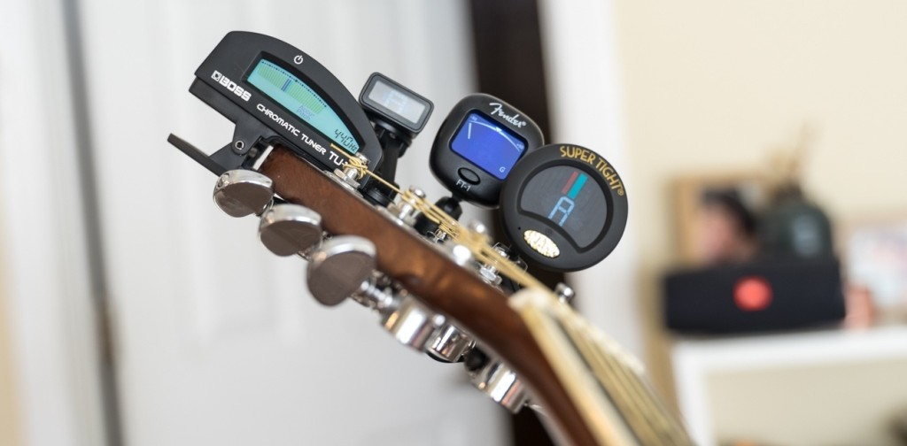
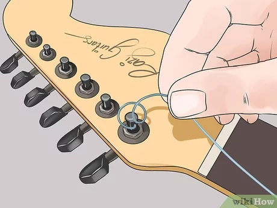
- Input
- The frequencies of the guitar strings, recorded with a microphone
- Output
- Turning the pegs to change the tune of the guitar strings
Updated plan
After careful thought, I decided to simplify the whole process. It was too hard to find a mechanism that could produce enough torque to turn the pegs on a real guitar.
To make the project more manageable, I decided to create a music box that plays the precise frequency of each guitar string. It lets a player tune their guitar by hand, matching each string to the exact pitch it needs.
Electronics: software and circuitry
To start, I designed a circuit around the Arduino Uno that works as a music box for the six frequencies of a guitar. The user presses one of six buttons, one per string, and each triggers its own frequency through a speaker connected to the Arduino. Each button also shows its own text on the OLED screen, so the device gives visual cues as well as sound.
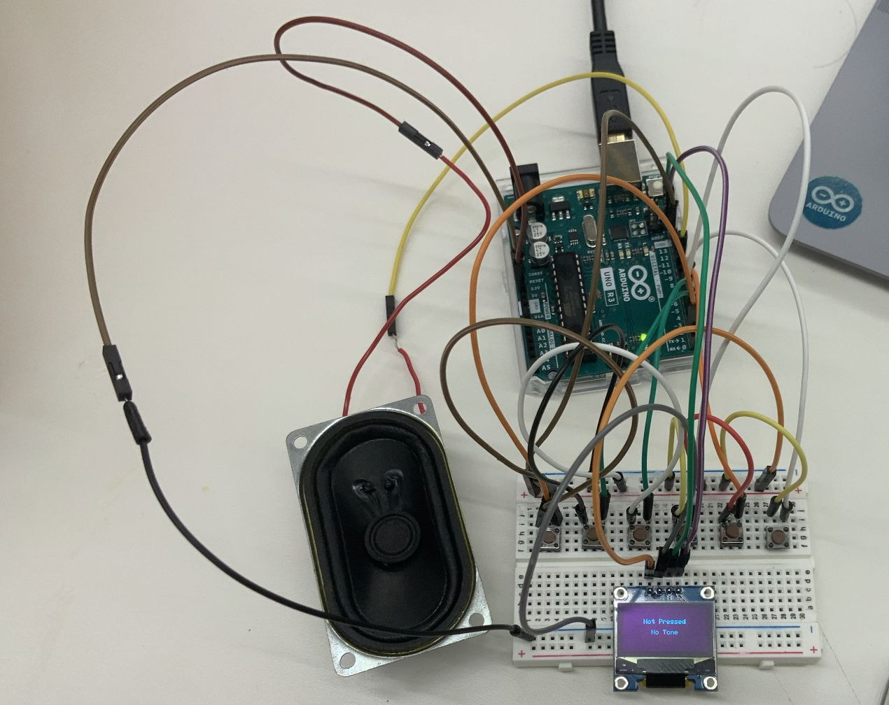
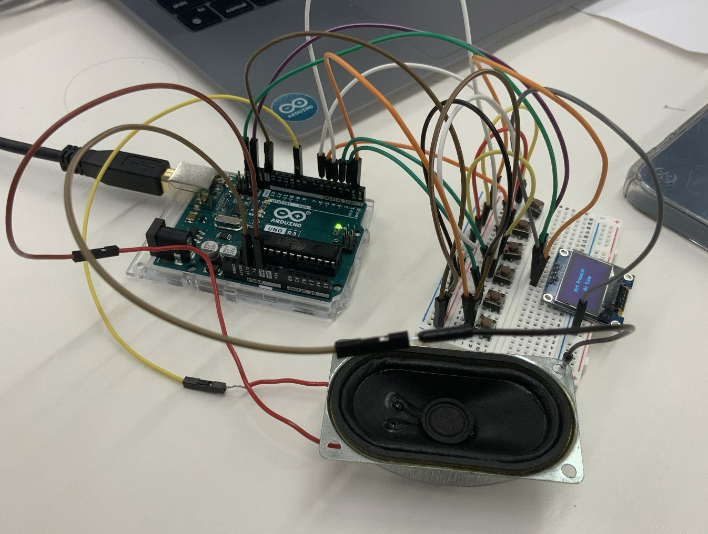
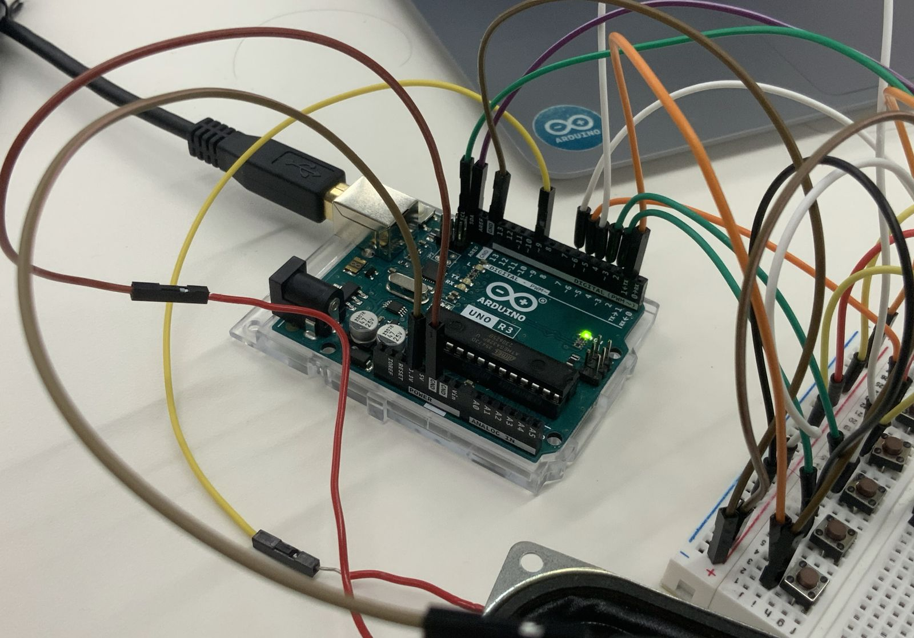
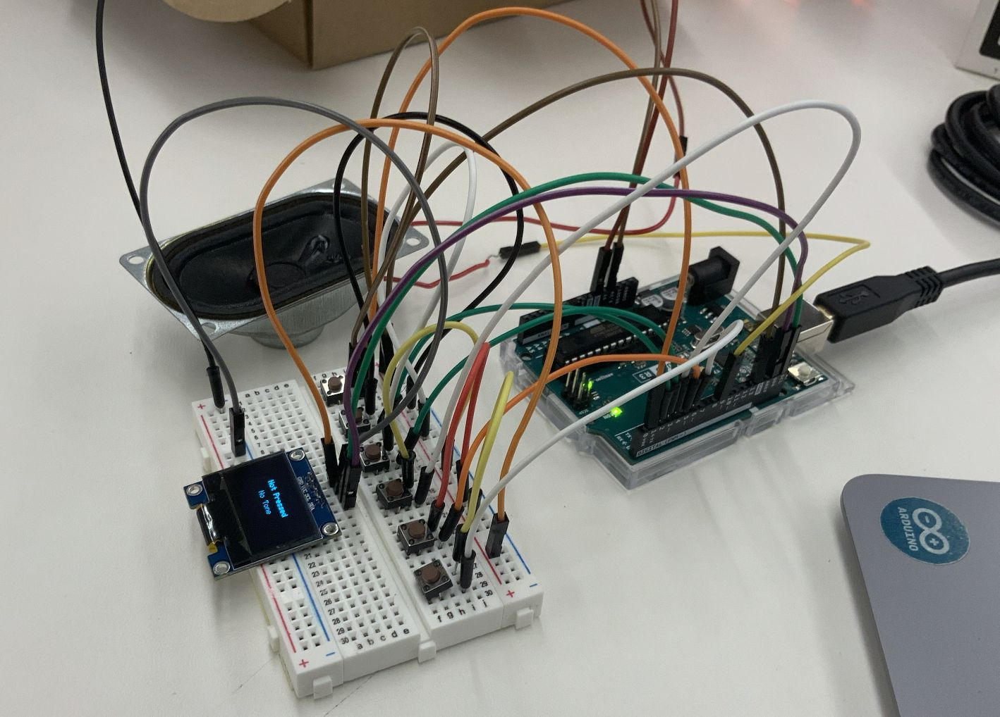
Equipment
- Arduino Uno
- Speaker
- OLED display
- Breadboard
- Buttons (×6)
- Wires
The first version of the code
#include <Wire.h>
#include <Adafruit_GFX.h>
#include <Adafruit_SSD1306.h>
#define SCREEN_WIDTH 128 // OLED display width, in pixels
#define SCREEN_HEIGHT 64 // OLED display height, in pixels
// Declaration for an SSD1306 display connected to I2C (SDA, SCL pins)
#define OLED_RESET -1 // Reset pin # (or -1 if sharing Arduino reset pin)
Adafruit_SSD1306 display(SCREEN_WIDTH, SCREEN_HEIGHT, &Wire, OLED_RESET);
const int buttonPins[] = {1, 2, 3, 4, 5, 6}; // Buttons connected to digital pins
const int speakerPin = 9; // Speaker connected to digital pin 9
// Frequencies for E2, A2, D3, G3, B3, E4
const int toneFrequencies[] = {82, 110, 147, 196, 247, 330};
String getNote(int index) {
const String notes[] = {"E2", "A2", "D3", "G3", "B3", "E4"};
if (index >= 0 && index < sizeof(buttonPins)/sizeof(int)) {
return notes[index];
}
return "Unknown";
}
String getString(int index) {
if (index >= 0 && index < sizeof(buttonPins)/sizeof(int)) {
return "String " + String(index + 1);
}
return "Unknown";
}
void setup() {
for (int i = 0; i < sizeof(buttonPins)/sizeof(int); i++) {
pinMode(buttonPins[i], INPUT_PULLUP); // Initialize the button pin as input with internal pull-up resistor
}
pinMode(speakerPin, OUTPUT); // Initialize the speaker pin as an output
// SSD1306_SWITCHCAPVCC = generate display voltage from 3.3V internally
if(!display.begin(SSD1306_SWITCHCAPVCC, 0x3C)) { // Address 0x3C for 128x64
Serial.println(F("SSD1306 allocation failed"));
for(;;); // Don't proceed, loop forever
}
display.clearDisplay();
display.setTextSize(1); // Set text size
display.setTextColor(SSD1306_WHITE);
}
void loop() {
display.clearDisplay();
bool buttonPressed = false;
for (int i = 0; i < sizeof(buttonPins)/sizeof(int); i++) {
int buttonState = digitalRead(buttonPins[i]); // Read the state of the button
if (buttonState == LOW) { // If the button is pressed (LOW because of pull-up resistor)
tone(speakerPin, toneFrequencies[i]); // Play a tone on the speaker
String note = getNote(i);
String stringNum = getString(i);
display.setCursor((SCREEN_WIDTH - (7 * 6))/2, 16); // 6 is approximate width of one character
display.println("Pressed");
display.setCursor((SCREEN_WIDTH - (note.length() + stringNum.length() + 2) * 6)/2, 32); // 6 is approximate width of one character
display.print(note);
display.print(", ");
display.println(stringNum);
buttonPressed = true;
break; // only one button can be pressed at a time
}
}
if (!buttonPressed) {
noTone(speakerPin); // If no button is pressed, stop playing the tone
display.setCursor((SCREEN_WIDTH - (11 * 6))/2, 16); // 6 is approximate width of one character
display.println("Not Pressed");
display.setCursor((SCREEN_WIDTH - (7 * 6))/2, 32); // 6 is approximate width of one character
display.println("No Tone");
}
display.display();
}The initial setup working
A neater layout
Once the foundational circuit had all of the essential components, I rebuilt it with a neater, more efficient layout. An additional breadboard gave me extra space for better wiring.
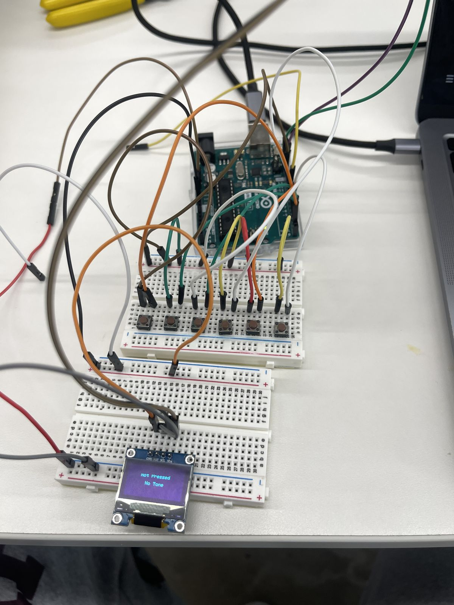
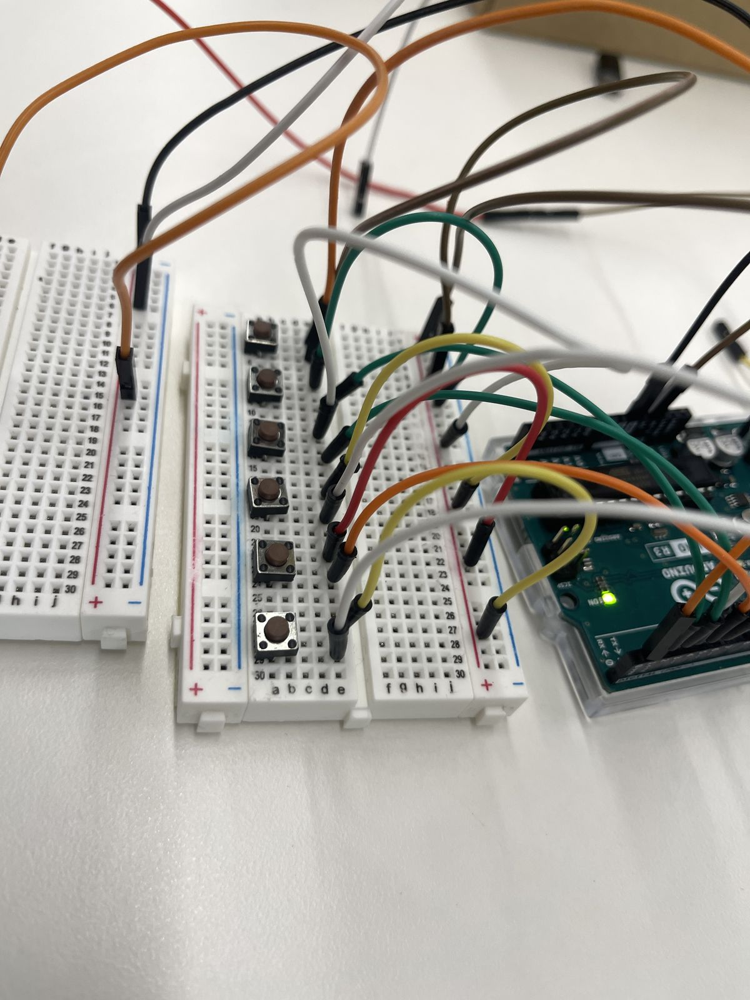
Trying an LCD and a microphone
With a base circuit working, I experimented with other input and output devices that could make the final product better. I tried a bigger LCD display in place of the OLED, and a microphone, to work toward the automatic tuner I had first planned.
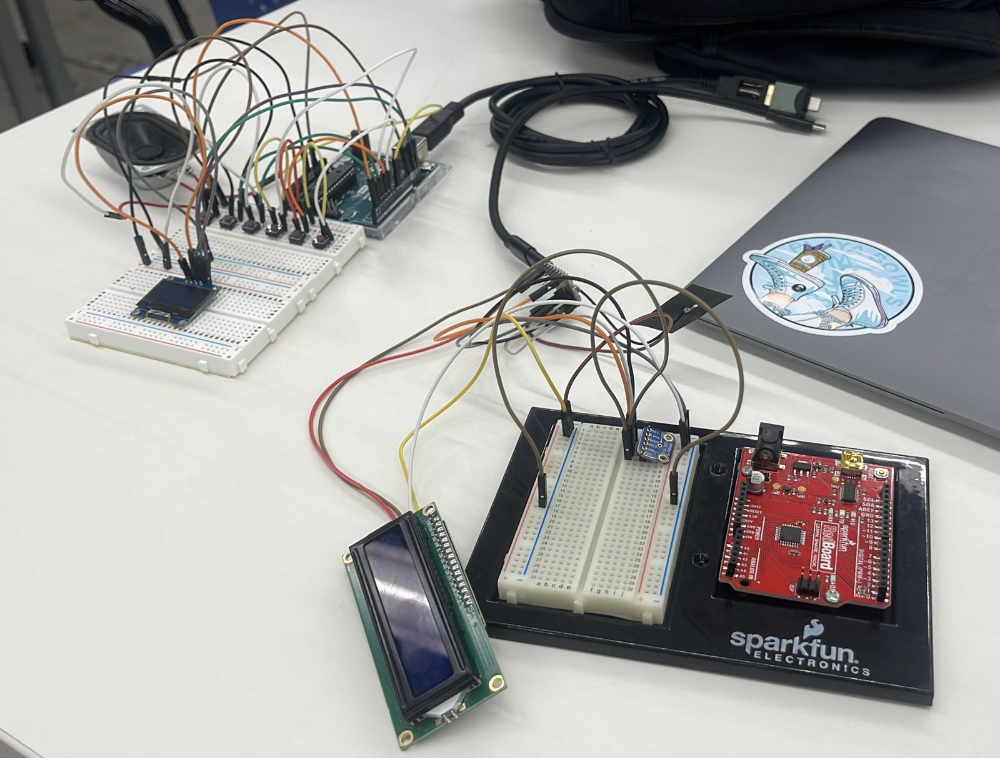
Getting these components to work was a struggle. I had trouble getting a frequency reading from the microphone. I also found the OLED screen a better choice than the LCD: the LCD was bigger, but the OLED was more pleasing to the eye, so I kept it for the final project.
A compact rebuild
Next I removed the extra breadboard to keep the system compact. I rebuilt the circuit even more neatly, with wires that sit flat on the breadboard without blocking anything, and connected the OLED display by wires instead of plugging it straight into the breadboard.
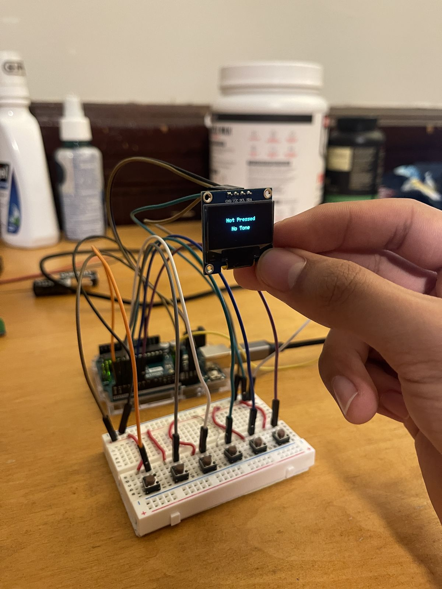
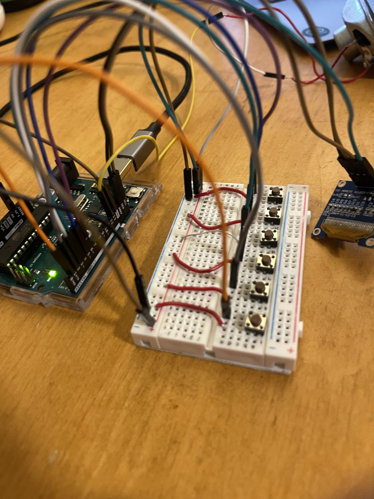
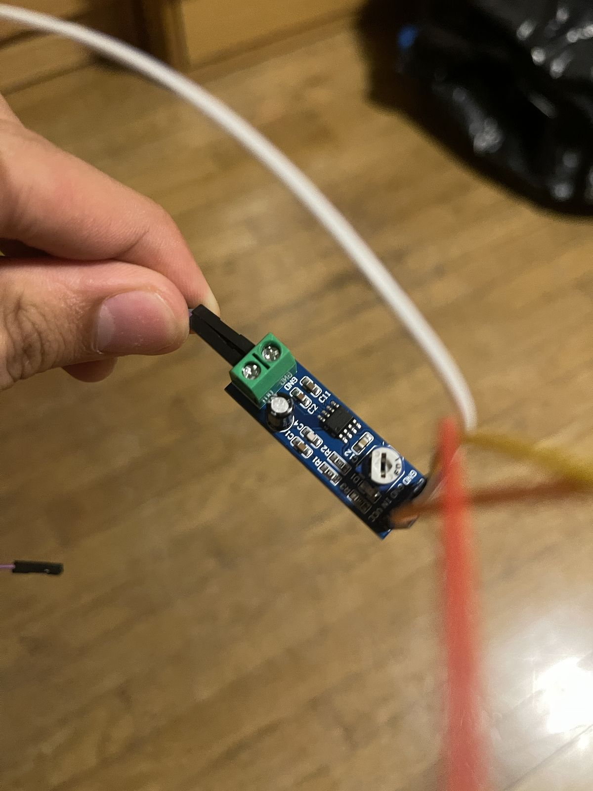
An amplifier, and power
I tried attaching an amplifier to make the speaker a little louder. That step didn’t work: I couldn’t get the amplifier to change the speaker’s volume.
After that, I wanted the device to be portable and easy to carry around, so I tried powering the Arduino Uno with both AA batteries and a power bank.
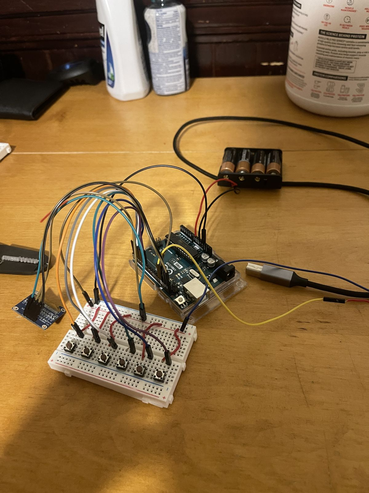
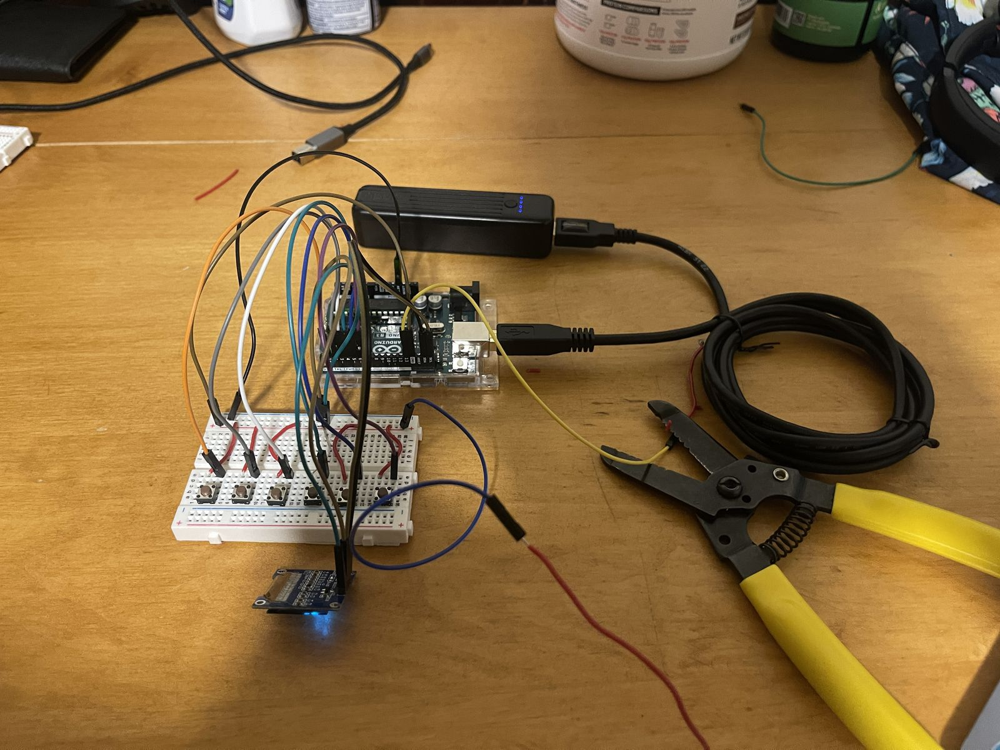
Final code
This is the final code I used for the project. Each press now holds its message on the screen for a moment while the tone plays.
#include <Wire.h>
#include <Adafruit_GFX.h>
#include <Adafruit_SSD1306.h>
#define SCREEN_WIDTH 128 // OLED display width, in pixels
#define SCREEN_HEIGHT 64 // OLED display height, in pixels
// Declaration for an SSD1306 display connected to I2C (SDA, SCL pins)
#define OLED_RESET -1 // Reset pin # (or -1 if sharing Arduino reset pin)
Adafruit_SSD1306 display(SCREEN_WIDTH, SCREEN_HEIGHT, &Wire, OLED_RESET);
const int buttonPins[] = {1, 2, 3, 4, 5, 6}; // Buttons connected to digital pins
const int speakerPin = 13; // Speaker connected to digital pin 9
// Frequencies for E2, A2, D3, G3, B3, E4
const int toneFrequencies[] = {82, 110, 147, 196, 247, 330};
String getNote(int index) {
const String notes[] = {"E2", "A2", "D3", "G3", "B3", "E4"};
if (index >= 0 && index < sizeof(buttonPins)/sizeof(int)) {
return notes[index];
}
return "Unknown";
}
String getString(int index) {
if (index >= 0 && index < sizeof(buttonPins)/sizeof(int)) {
return "String " + String(index + 1);
}
return "Unknown";
}
void setup() {
for (int i = 0; i < sizeof(buttonPins)/sizeof(int); i++) {
pinMode(buttonPins[i], INPUT_PULLUP); // Initialize the button pin as input with internal pull-up resistor
}
pinMode(speakerPin, OUTPUT); // Initialize the speaker pin as an output
// SSD1306_SWITCHCAPVCC = generate display voltage from 3.3V internally
if(!display.begin(SSD1306_SWITCHCAPVCC, 0x3C)) { // Address 0x3C for 128x64
Serial.println(F("SSD1306 allocation failed"));
for(;;); // Don't proceed, loop forever
}
display.clearDisplay();
display.setTextSize(1); // Set text size
display.setTextColor(SSD1306_WHITE);
}
void loop() {
display.clearDisplay();
bool buttonPressed = false;
for (int i = 0; i < sizeof(buttonPins)/sizeof(int); i++) {
int buttonState = digitalRead(buttonPins[i]); // Read the state of the button
if (buttonState == LOW) { // If the button is pressed (LOW because of pull-up resistor)
tone(speakerPin, toneFrequencies[i]); // Play a tone on the speaker
String note = getNote(i);
String stringNum = getString(i);
for (int j = 0; j < 10; j++) {
display.clearDisplay();
display.setCursor((SCREEN_WIDTH - (7 * 6))/2, 16); // 6 is approximate width of one character
display.println("Pressed");
display.setCursor((SCREEN_WIDTH - (note.length() + stringNum.length() + 2) * 6)/2, 32); // 6 is approximate width of one character
display.print(note);
display.print(", ");
display.println(stringNum);
display.display();
delay(100); // You might need to adjust this delay
}
buttonPressed = true;
break; // only one button can be pressed at a time
}
}
if (!buttonPressed) {
noTone(speakerPin); // If no button is pressed, stop playing the tone
display.setCursor((SCREEN_WIDTH - (11 * 6))/2, 16); // 6 is approximate width of one character
display.println("Not Pressed");
display.setCursor((SCREEN_WIDTH - (7 * 6))/2, 32); // 6 is approximate width of one character
display.println("No Tone");
}
display.display();
}Assembly: CAD and PrusaSlicer
With the circuitry and software done, I needed something that held all of the electronics and wires in one place while still letting the user interact with the device. I planned a box: using Fusion 360, I designed a press-fit box and cut it from cardboard.
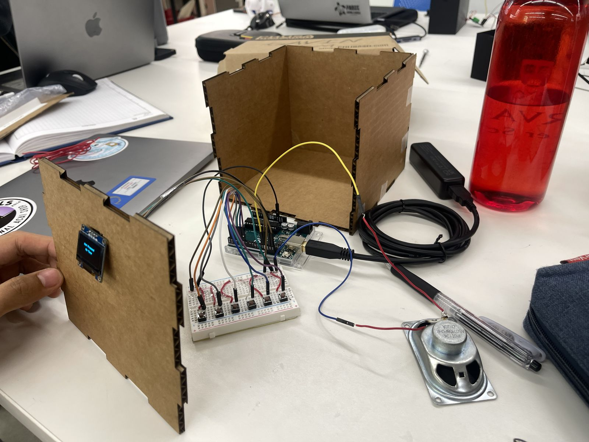
I also screwed the OLED screen into the front panel of the box.
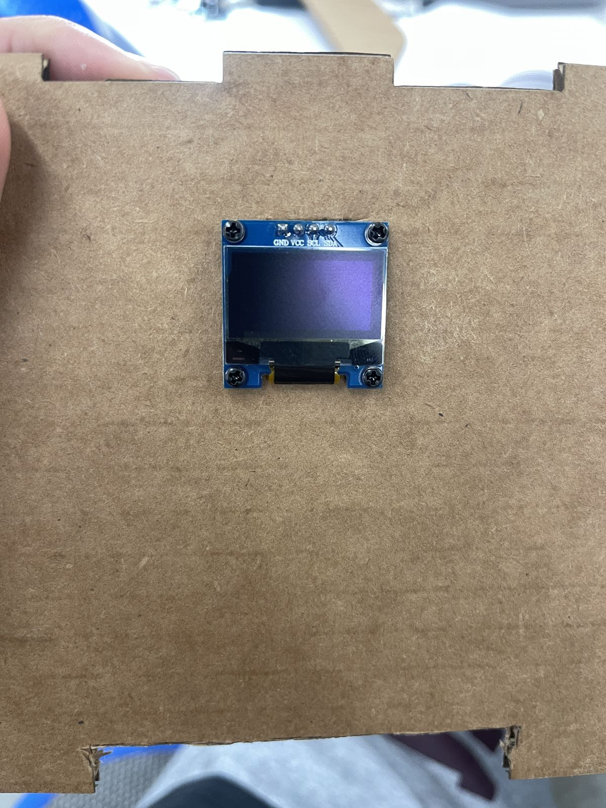
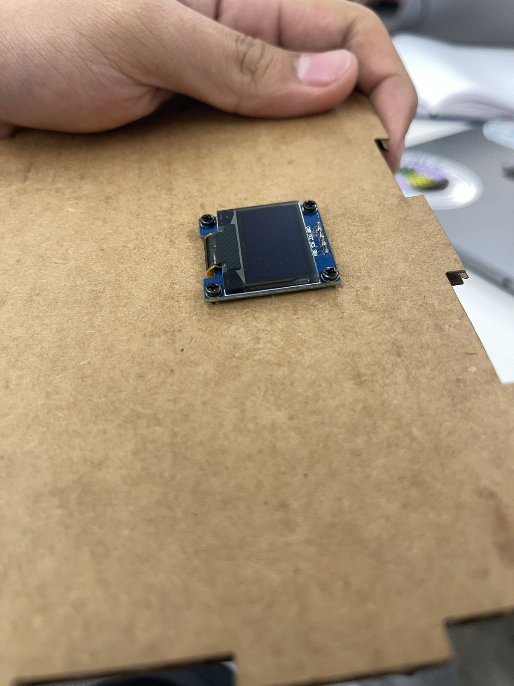
Download the press-fit box DXF, 106 KB
3D printing
I wanted to use the 3D printer to solve a problem with the system. One limitation was that I couldn’t use the amplifier to control the speaker’s volume. So I designed a 3D-printed sound amplifier that takes in the sound from the speaker and makes it louder to the human ear.
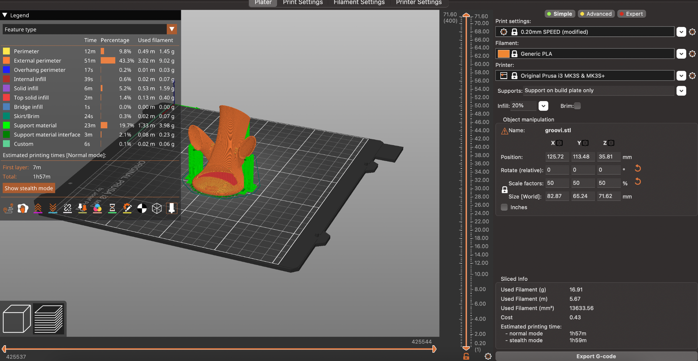
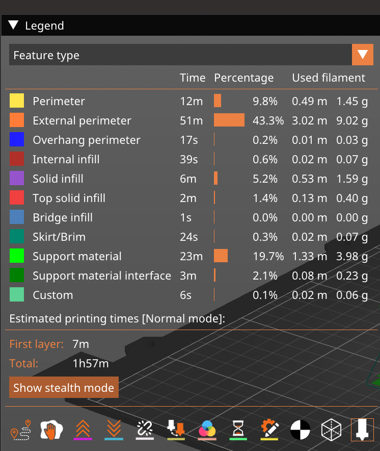
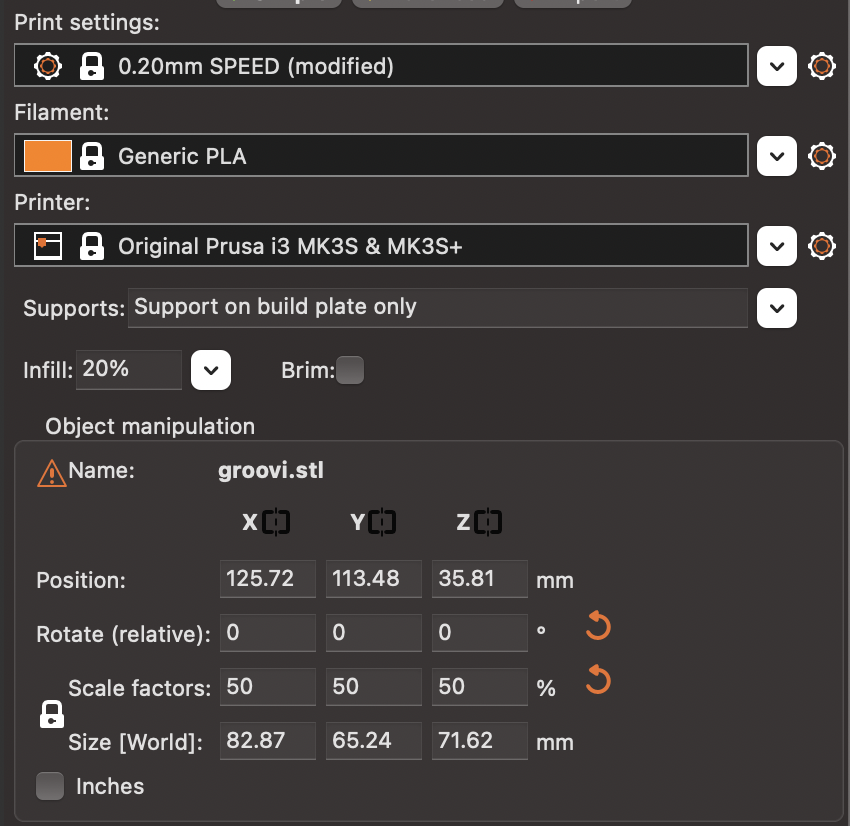
Download the sound amplifier STL, 2.7 MB